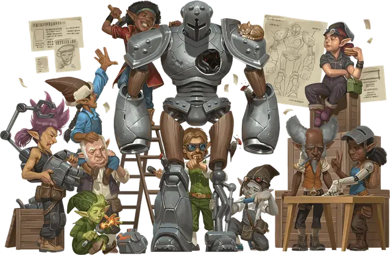

Гном
Gnome

Тип существа Гуманоид
Размер Маленький (рост около 3-4 футов)
Скорость 30 футов
Гномы — волшебный народ, созданный богами изобретательства, иллюзий и подземной жизни. Первых гномов мало кто видел из-за их скрытной природы и склонности жить в лесах и норах. Невеликие размером, они возмещали это умом. Они запутывали хищников с толку ловушками и лабиринтами туннелей. Они учились магии у таких богов, как Гарл Златоблеск, Бэрван Дикий Странник и Баравар Теневой Плащ, которые посещали их инкогнито. Эта магия со временем выделила роды лесных гномов и скальных гномов.
Гномы — миниатюрный народец с большими глазами и заострёнными ушами, который живет порядка 425 лет. Многим гномам нравится ощущение крыши над головой, даже если эта “крыша” - всего лишь шляпа.
Особенности
Вы обладаете следующими особенностями вида:
Тёмное зрение. У вас есть Тёмное зрение дальностью 60 футов.
Гномья хитрость. Вы совершаете с Преимуществом спасброски Интеллекта, Мудрости и Харизмы.
Гномий род. Вы принадлежите к гномьему роду, что наделяет вас необычными способностями. Выберите один из следующих вариантов; какой бы из них вы ни выбрали, Интеллект, Мудрость или Харизма — ваша заклинательная характеристика для заклинаний, сотворяемых вами с этой особенностью (выберите характеристику при выборе рода):
Лесной гном. Вы знаете заговор Малая иллюзия. Кроме того, у вас всегда подготовлено заклинание Разговор с животными. Вы можете сотворять его без ячейки заклинаний количество раз, равное вашему Бонусу владения, и вы восстанавливаете все потраченные использования по завершению Долгого отдыха. Вы также можете сотворять это заклинание, используя любые имеющиеся у вас ячейки заклинаний.
Скальный гном. Вы знаете заговоры Починка и Фокусы. Кроме того, вы можете потратить 10 минут, сотворяя Фокусы, чтобы создать Крошечное заводное устройство (КЗ 5, 1 Хит), такое как игрушка, зажигалка или музыкальная шкатулка. Когда вы создаете устройство, вы определяете его функцию, выбирая один из эффектов Фокусов; устройство создаёт этот эффект всякий раз, когда вы или другое существо Бонусным действием активируете его прикосновением. Если выбранный эффект вариативен, вы выбираете вариант при создании устройства. Например, если вы выбираете эффект воспламенения-тушения, вы определяете, создаёт устройство огонь или гасит его; устройство не может делать и то, и другое. Вы можете иметь не более чем три таких устройства одновременно; каждое из них разваливается через 8 часов после создания или если вы демонтируете его, касаясь, действием Использование.